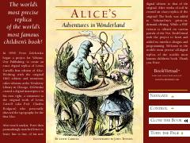

AAAlisaning g'aroyib va sehrli olamdagi unutilmas sarguzashtlari.
Ushbu asar Alisa ismli qizchaning g'aroyib tushlar olamiga tushib qolishi va u yerdagi g'ayritabiiy mavjudotlar bilan sarguzashtlari haqida hikoya qiladi. Lewis Carroll qalamiga mansub ushbu klassik asar o'zining o'tkir hazillari va falsafiy mazmuni bilan butun dunyoda mashhur.